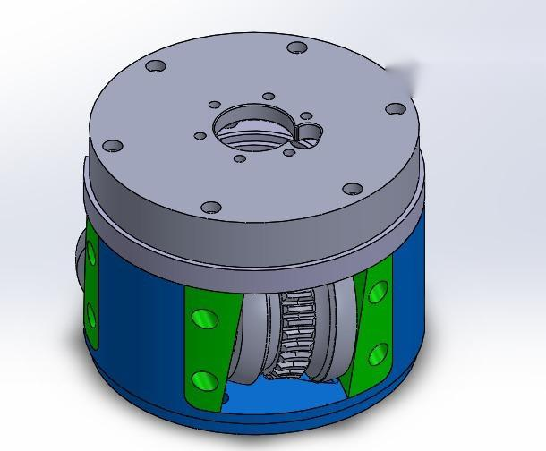
01 / SolidWorks
Rotary Cylindrical Cleaner — Assembly Design
Rotary cleaning of internal cylindrical bore surfaces.
MECHANICAL DESIGN PORTFOLIO
Mechanical design, CAD modelling, CNC manufacturing, fabrication, and product development.
Current RoleMechanical Design Engineer — 3D Cube Design Studio
LocationRawalpindi, Pakistan

PROFILE / ABOUT
Mechanical engineering experience across CAD modelling, fabrication, machining, and product development. Precise enough for engineering drawings. Practical enough for manufacturing.
I transform engineering concepts into practical, manufacturable solutions through mechanical design, CAD modelling, engineering drawings, machining preparation, and prototype development.
CAPABILITY / SKILLS
SELECTED ENGINEERING WORK
Projects are grouped by verified context from the portfolio. Project browsers show a maximum of four cards per page.
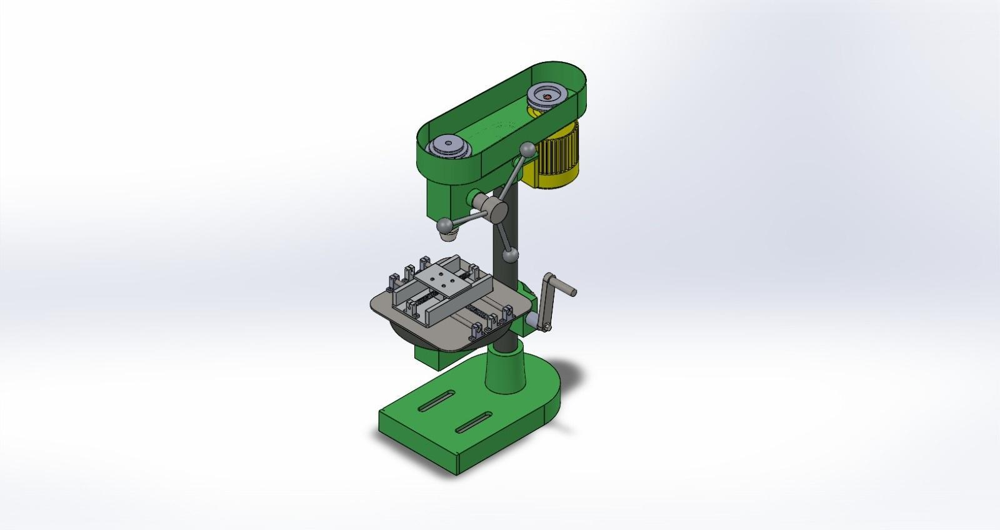
FINAL YEAR PROJECT | DESIGN AND FABRICATION
Manual desktop Additive Friction Stir Deposition machine for AA6061 aluminium, completed at HITEC University Taxila.
The complete mechanical design was developed in SolidWorks. Primary load-bearing components were checked through static structural and vibration analysis before fabrication.
PROFESSIONAL SOLIDWORKS PROJECTS
Mechanical assemblies for drone handling, rotary cleaning equipment, and vehicle-mounted structural systems.

Rotary cleaning of internal cylindrical bore surfaces.
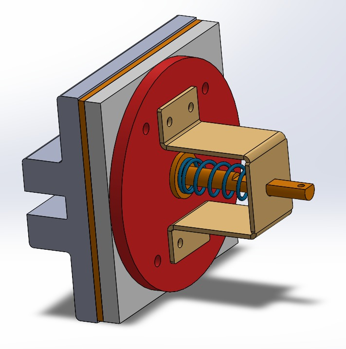
Secure a drone payload in position.
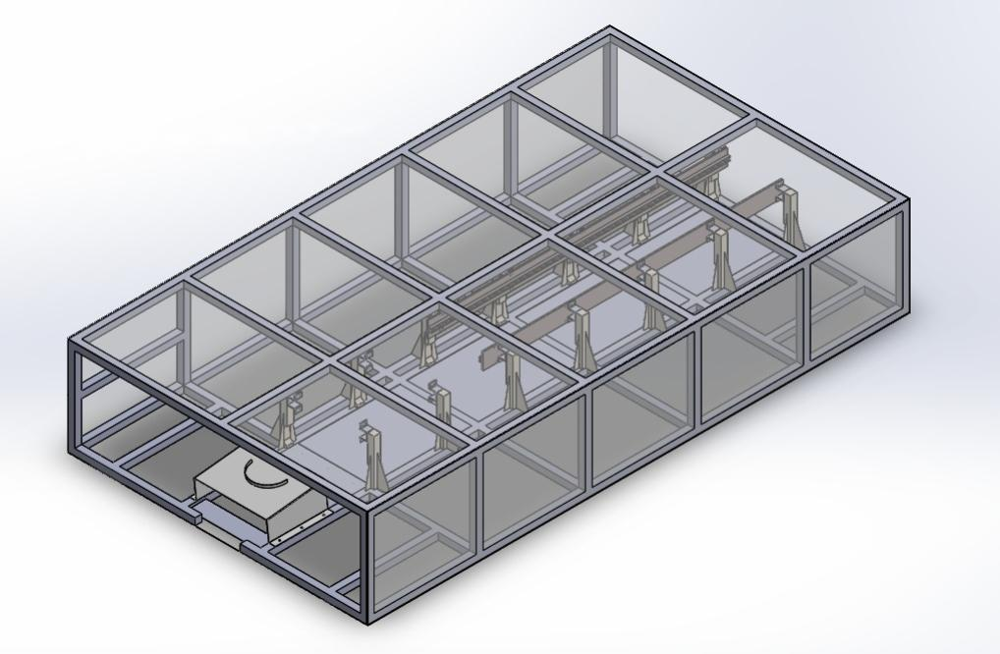
Sequential deployment from a modular multi-cell frame.
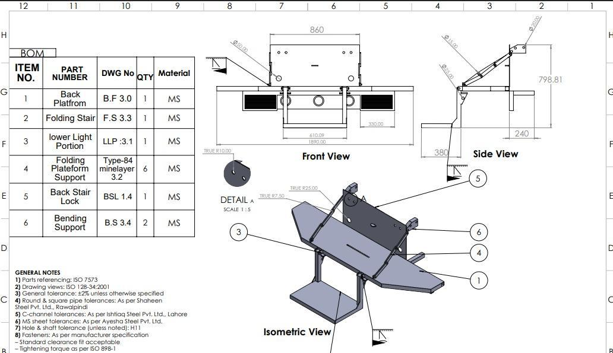
Vehicle mounted folding access system.
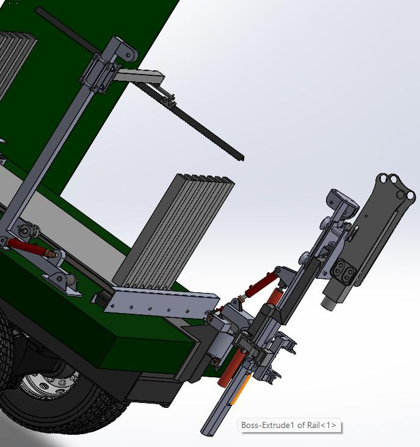
Vehicle-mounted mechanized system for automated perimeter fence installation.
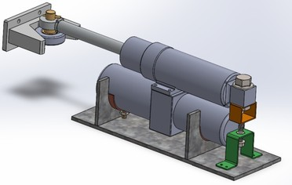
Mechanically actuated locking arrangement for securely holding and positioning a drone payload.
SOLIDWORKS PROJECTS
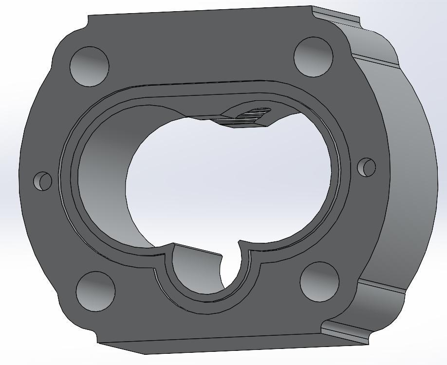
Head housing with motor mount interface, and bolt-hole pattern.
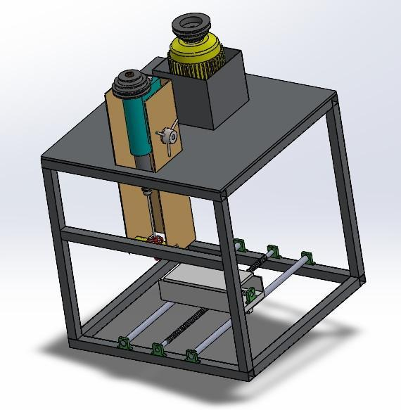
Complete structural frame and worktable with motor mounting, linear guides, and base support.
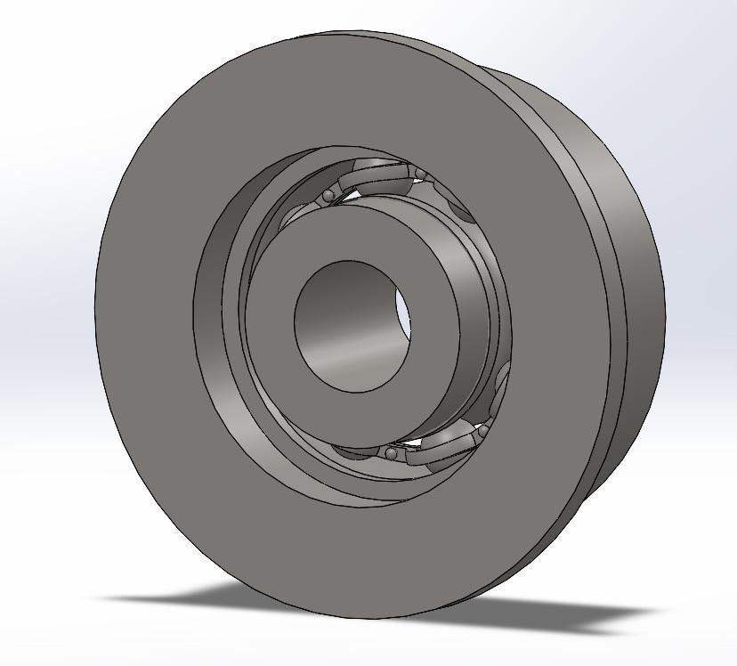
Bearing and pulley housing assembly sized to standard bearing tolerances.
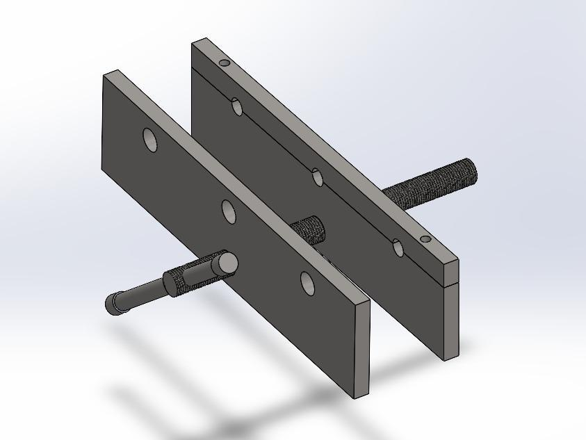
Adjustable bolt hole pattern for workpiece alignment.
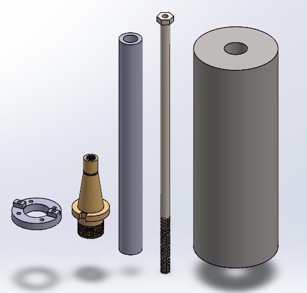
Vertical milling machine head and related components modelled for FYP understanding.
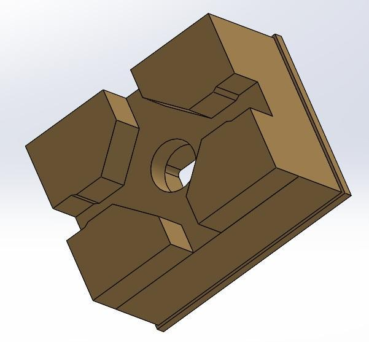
Mounting bracket with stepped faces and a central bore, prepared for VMC machining.
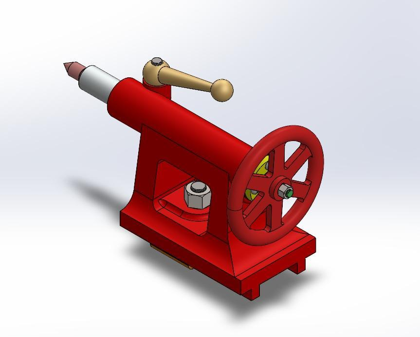
Manual hand tail stock assembly modelled for lathe machine operations.
PTC CREO & CNC
NUST College of EME | Robot Maker Lab — Internship work covering part and assembly modelling, CNC laser cutting and manufacturing setup, toolpath generation, and NC code.
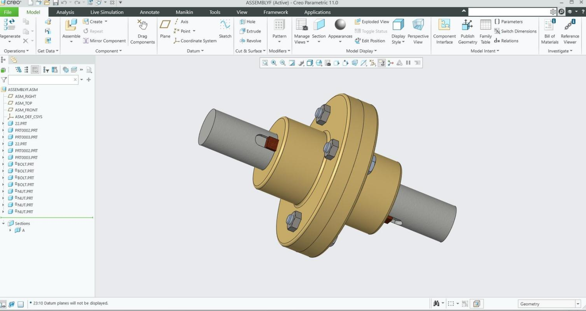
Bolt-hole fastener pattern and shaft interface modelled in PTC Creo.
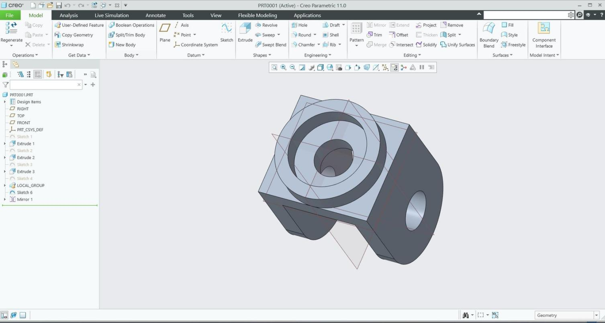
Stepped bores and a chamfered profile prepared for CNC machining.
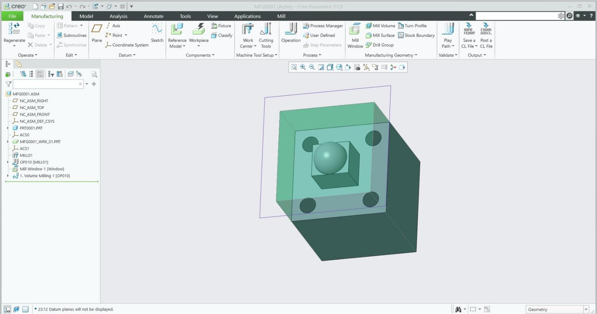
Volume-milling setup and toolpath generation in PTC Creo Manufacturing.
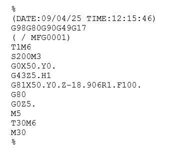
NC program generated from the PTC Creo manufacturing operation.
AUTOCAD PROJECTS
Completed industry-based architectural design work in AutoCAD, including a residential 3D house plan and layout.
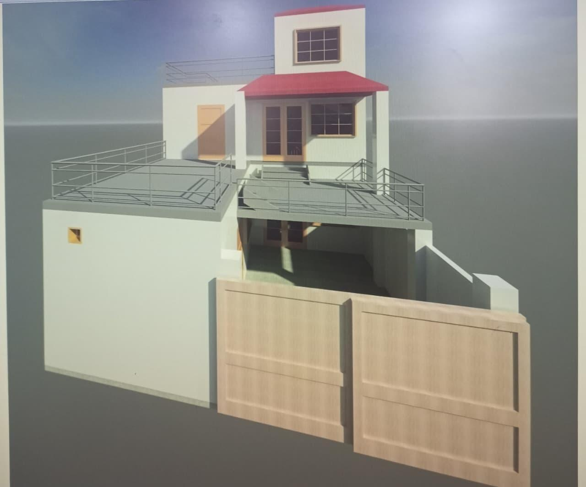
ADDITIONAL ACADEMIC PROJECTS
Verified circular and rectangular fin designs by comparing actual lengths with optimized theoretical lengths for maximum heat-transfer performance.
Designed a wind-driven mechanical system for water pumping in agricultural areas using renewable energy instead of conventional power.
Designed and developed a mechanical power-transmission mechanism for demonstration in vibration-analysis experiments.
EXPERIENCE
3D Cube Design Studio
Tech Valley, Islamabad
SolidWorks design of drone-handling, rotary-cleaning, and vehicle-mounted systems.
NUST College of EME (Robot Maker Lab)
Eight-week internship in design, manufacturing, CNC cutting, and fabrication.
Electrosolz, Islamabad
Product design and manufacturing work involving 3D printers.
EDUCATION & CERTIFICATIONS
HITEC University Taxila | CGPA 3.18 / 4.00
KRL Institute of Technology Kahuta | 93%
AVAILABLE FOR MECHANICAL DESIGN OPPORTUNITIES